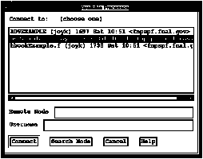

When you select Connect to Process from the Main Window's File/Process pull-down menu, Histo-Scope will pop-up a dialog box that lists all processes on the machine Histo-Scope was run from that it can connect to. That is, each running process is listed that has called the HS_INITIALIZE routine thereby making itself known to Histo-Scope.

Figure 13. Available Processes Window
Histo-Scope allows heterogeneous connections. For example, you can run Histo-Scope on an SGI Unix system and connect to a process running on a DEC OSF-1 system.
If you want to connect to a process on another machine, enter a remote node name and press the Search Node button. The processes Histo-Scope can connect to on that machine will then be listed after a pause for searching that remote machine. The .rhosts file on the remote node must allow access from your username on the current node. If your username is different on the remote node than it is on your current system, you can specify a remote username, and that user's .rhosts file will be checked for access from your current username and system.
If more than one process is listed, look for the identity string supplied in the HS_INITIALIZE call of your program, the user-name used to start the process, and the time the process executed the HS_INITIALIZE call (or was started).
Pressing the Connect button or double-clicking on a process requests Histo-Scope to connect to the highlighted or selected process. Once the connection is established, Histo-Scope will display on the Main Window the top-level items and sub-categories of data items that Histo-Scope can access from the process.
When selecting Connect to Process from the Main Window, if you already have a file open or are connected to another process, Histo-Scope will first ask you if you want to close or disconnect before it pops up the Connect to Process dialog box.
If you are running Histo-Scope on a Unix system, do not put the Histo-Scope process in the background if you plan to connect to a process. This is because the system may put the Histo-Scope process into a wait state that it will not get out of until the process is put into the foreground. After the connection is successful, the Histo-Scope process may be put into the background, if necessary, until you need to connect to another process.
Processes whose data can be viewed using Histo-Scope use the computer's file system to communicate their existence to the Histo-Scope program. The HS_INITIALIZE call creates a small file which can be read by a Histo-Scope program trying to make a connection. On Unix Histo-Scope will create and look for running process identifications in the directory pointed to by the TMPDIR environment variable, if defined, or the /tmp if TMPDIR is not defined. However, for remote connections, Histo-Scope looks only in the /tmp directory on the remote system.
For remote access to a running data-generating process you can verify whether you have correctly set up your .rhosts file on that system:
Type to the shell on the system you will run Histo-Scope:
% rsh nodename ls /tmp
where nodename is the remote host name you will be connecting to (i.e. where your data-generating process will be running).
The following is an example .rhosts file:
fnalv.fnal.gov smith
fnalo.fnal.gov smith
fnala.fnal.gov smith
fnpspf.fnal.gov jonsmith
This .rhosts file should be created on the host where your data-generating process will run and specifies the access to this account from each node/username listed above (i.e. where you expect to run Histo-Scope). On Unix, .rhosts resides in your home directory.
After typing the above rsh command, you should see a directory of files (or a message saying no files were found). If an error message is printed, use this to help correct the situation. For instance, if the message printed is Permission Denied, check your .rhosts file to ensure it allows access to your username on the current host system.